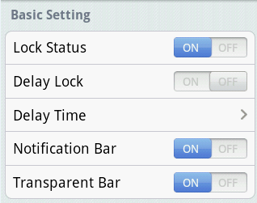
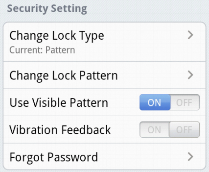
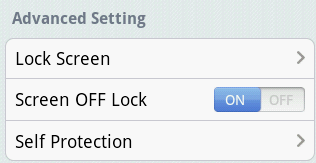

Start/Stop the app lock (If you have not set the lock pattern, you need to set your pattern when you start the app lock).
Protected unlocked apps do not require entering lock pattern for access during your defined "Delay Time".
Choose the relock delay time.
Whether to show the app lock status in notification bar. We suggest keeping it on to prevent Smart AppLock from being force-stopped by Task Manager.
Whether to make the notification bar icon transparent.

Change your lock type to pattern, PIN or password.
Change your current pattern, PIN or password.
Pattern visible or not when unlocking pattern lock.
Whether to use the vibration feedback when unlocking.
Set the "authentication email" or "security question" to help you reset the pattern, PIN or password in case you forgot.

Choose your lock screen wallpaper.
Whether to re-lock when screen turns off. (only if Delay Lock is on).
Choose whether to lock the system app manager and android market in order for self protection. (All are locked by default)